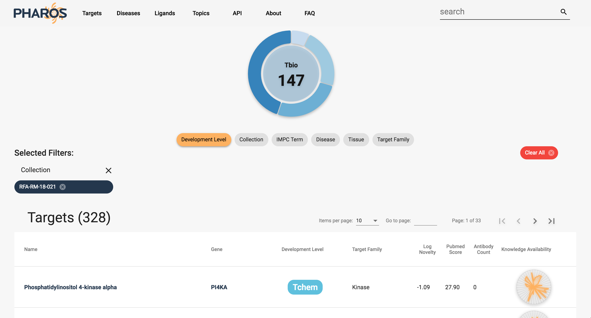

<div class = "about-block">
    <div fxLayout="row" fxLayout.xs="column" fxLayoutAlign="space-around center">
      <div fxFlex="5"></div>
    <div fxFlex="30">
      <div class = "about-banner">Robust Data Discovery</div>
      <ul class ="about-list">
        <li class="about-list-item">Search and browse data from 60+ data sets</li>
        <li class="about-list-item">Filter by dozens of properties</li>
        <li class="about-list-item">Multiple rich visualizations</li>
        <li class="about-list-item">Create, save and download data sets</li>
        <li class="about-list-item">Use topics to explore data connectivity</li>
      </ul>
    </div>
      <div fxFlex="65">
      
      </div>
  </div>
</div>
